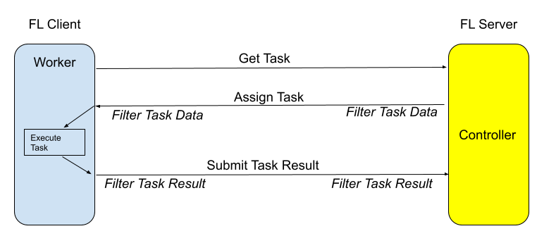

Controllers and Controller API¶
Controller/Worker Interactions¶
NVIDIA FLARE 2.0’s collaborative computing is achieved through the Controller/Worker interactions.

The Controller is a python object that controls or coordinates the Workers to get a job done. The controller is run on the FL server (highlighted on the right).
A Worker is capable of performing tasks. Workers run on FL clients.
In its control logic, the Controller assigns tasks to Workers and processes task results from the Workers.
Workers keep asking for the next task to do, executes the task, and submits results to the Controller, until instructed to exit by the Controller (a special END_RUN task).
The following diagram depicts how the Controller and Worker interact.
Controller API¶
The Controller API provides methods for assigning tasks to the Workers (FL clients)
in different ways:
Broadcast a task to multiple clients
Send a task to a single client
Arrange a task to be done by multiple clients in turns
See the included Controller implementation and full reference
implementations of the following controller workflows: Scatter and Gather Workflow, Cross Site Model Evaluation / Federated Evaluation, and
cyclic_workflow.
Scatter and Gather Workflow¶
The Federated scatter and gather workflow is an included reference implementation of the default workflow of previous versions of NVIDIA FLARE with a Server aggregating results from Clients that have produced Shareable results from their Trainer.
At the core, the control_flow of nvflare.app_common.workflows.scatter_and_gather.ScatterAndGather is a for loop:

Trainer¶
You need to implement the train() method for your Trainer.
FL client gets the global Shareable from the FL server for each round and then the train() method will be called.
The train() method needs to get the required information from the global Shareable,
use that in its training process, then returning the local training result as a Shareable.
You will need to configure your own Trainer in config_fed_client.json.
Example FL configurations can be found in NVIDIA FLARE Application.
Learnable¶
Learnable is the result of an FL application.
For example, in the deep learning scenario, it can be the model weights.
In the AutoML case, it can be the network architecture.
A LearnablePersistor defines how to load
and save a Learnable. Learnable is a subset of the model file (which can contain other data like LR schedule)
which is to be learned, like the model weights.
Aggregator¶
Aggregators define the aggregation algorithm to aggregate the Shareable.
For example, a simple aggregator would be just average all the Shareable of the same round.
Below is the signature for an aggregator.
Cross Site Model Evaluation / Federated Evaluation¶
The cross site model evaluation workflow uses the data from clients to run evaluation with the models of other clients.
nvflare.app_common.workflows.cross_site_model_eval.CrossSiteModelEval
Cyclic Workflow¶
Cyclic workflow is new for NVIDIA FLARE 2.0.
nvflare.app_common.workflows.cyclic_ctl.CyclicController
You can study the source code and use it as a starting point to write your own controller workflows.
Task Lifecycle¶
The central concept of the Controller API is Task.
A Task is a piece of work that is assigned by the Controller to client workers. Depending on how the task is assigned (broadcast, send, or relay), the task will be performed by one or more clients.
The Controller’s Task Manager manages the task’s lifecycle:
First, the programmer creates the task, specifying the name and the data of the task.
Then, the programmer calls one of the task methods (e.g. broadcast, send, relay, etc.). All these methods do is simply adding the task to the Task Queue. Now the task is waiting for clients to come to retrieve it. Note that there could be multiple tasks in the queue.
When a client comes to get the next task, the Task Manager decides which task in the queue should be assigned to the client. The general rule is that the tasks will be examined one by one following their orders in the queue. If the client is a candidate of the task and the task has not been performed by the client, AND the task-specific rule allows the client to be assigned, then the task is assigned to the client, and a new ClientTask record is created and added to the task’s client_tasks list. If the before_task_sent callback (CB) is provided, it is called before sending the task to the client.
If no task is found for the client, the Task Manager tells the client to try again later.
When the client finishes its assigned task and comes back to submit its result, the client_task is found for this client, and then the result_received CB (if provided) is called. The result is recorded into the client_task record, and the client_task is marked as “result received”.
- Eventually the task is completed when one of the following conditions is met:
The task itself is timed out (if the task timeout is specified)
All assigned tasks received results from clients
Task specific exit rule is met (e.g. for broadcast, the minimal-responses are received and waited for enough time after that)
The task is cancelled explicitly
Fatal error occurred (task data filtering error) and the task is cancelled by the system
Once the task is completed, it’s completion_status is set based on the condition the task is completed, and the task is removed from the task queue. If the task_done CB is provided, it is called. This is the end of the task’s lifecycle.
Note
In NVIDIA FLARE 2.0, the underlying communication is by gRPC: the client always initiates communication by sending a request to the server and a receiving response. When we say “server sends task to the client”, it is only conceptual. With gRPC, the client sends the “ask for next task” request to the server, and the server responds with the task data.